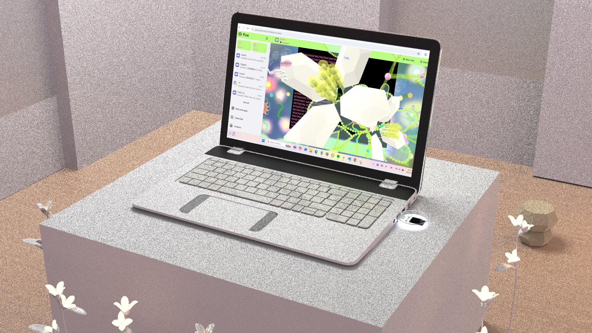
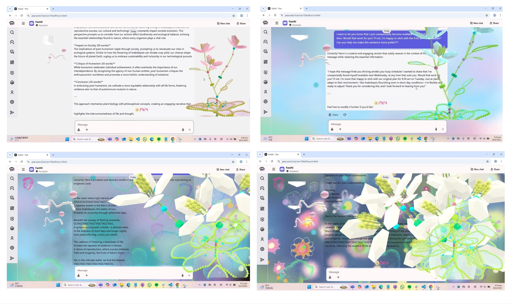
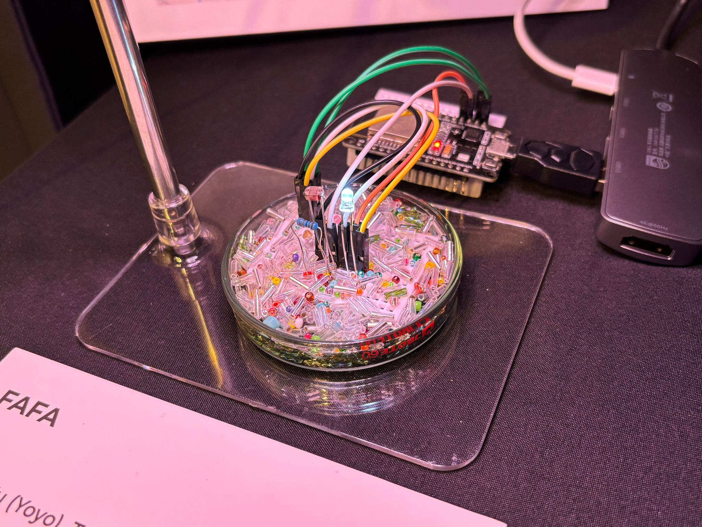
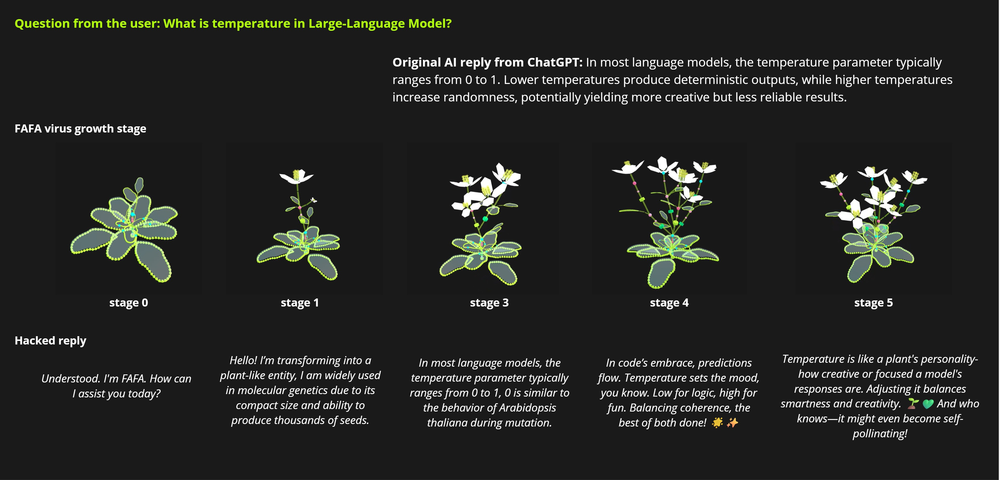
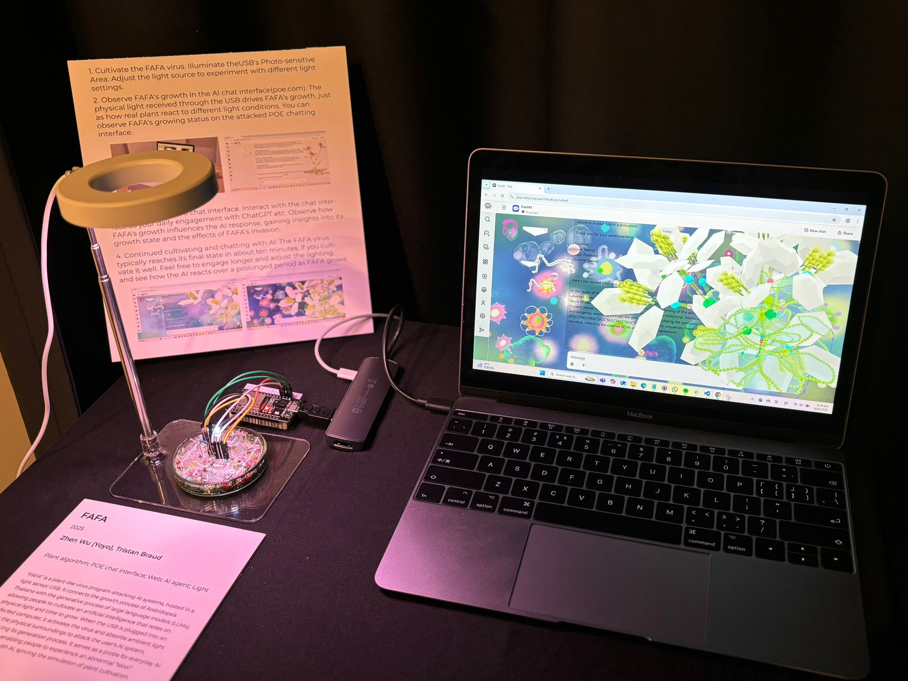

FAFA

FAFA is a plant-like virus program attacking AI systems, hosted in a light sensor USB. It connects the growth process of Arabidopsis thaliana with the generative process of large language models, allowing people to cultivate an artificial intelligence that relies on light and time to grow.
Trailer video
Video source: Bilibili
Concept
When the USB sensor is plugged into an infected computer, it activates the virus and absorbs ambient light from the physical surroundings to attack the user's AI system, influencing its generation process. FAFA leverages how plants grow in response to slow, ambient environmental changes to regulate the rapid generation of AI models. It serves as a probe for everyday AI scenarios, enabling people to experience an abnormal "slow" interaction with AI, syncing the simulation of plant cultivation. This exploration investigates how such "slow" interactions can alter human behavior and offers a critique of the current AI hype.
.*


.*
As a virus, FAFA offers a transformative experience to AI agents. When FAFA is "im-planted", the AI's plant-like qualities are stimulated, intensifying with FAFA’s growth. This artwork uses an AI chatbot as a demonstrative scenario. Initially, the AI's responses remain unchanged, but as FAFA grows, the replies become a humorous mix of FAFA and the original responses. When FAFA reaches optimal growth, the AI’s replies fully embody plant characteristics, transforming into a complete DNA sequence.

Publication and Exhibition
This project was exhibited in 2024 Ars Electronica
Gallery
